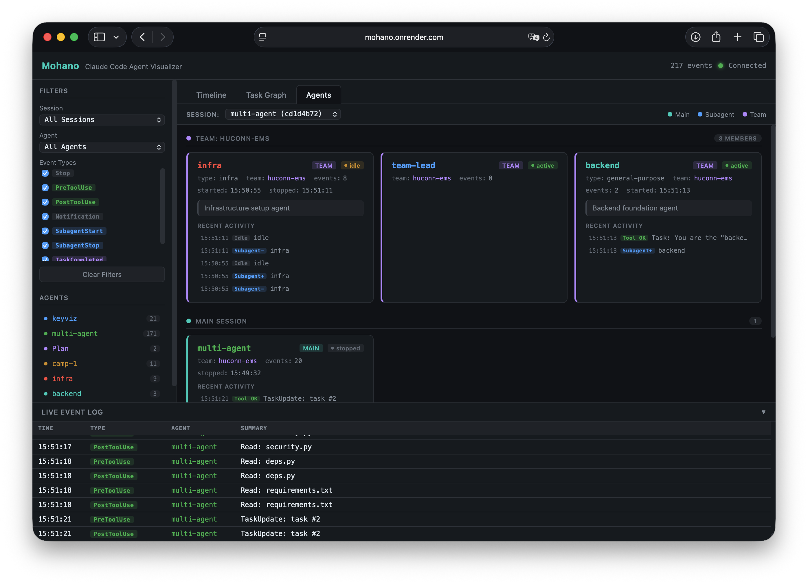

Live Dashboard
Monitor every agent, task, and tool call as it happens

Agents View
See every agent in your session — team members, subagents, and the main session — each with status, type, and recent activity.

Task Graph
Kanban board of all tasks with dependency arrows. Track what's pending, in progress, and completed across your multi-agent session.